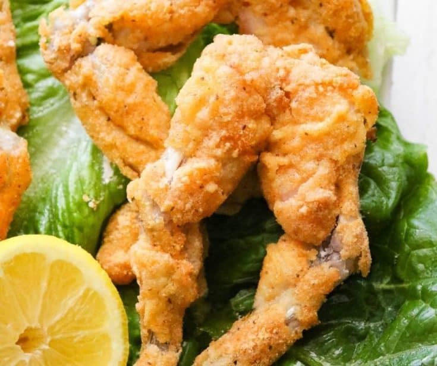

Fried Frog's Legs Recipe

what do frog legs taste like? Frog is often said to taste like chicken, because it is mild in flavor. Frog legs can be best compared to chicken wings in taste and texture, but some people say that they taste similar to fish.
Legend has it that the French started eating frogs' legs in the 12th century when cunning monks who were forced into a “no-meat” diet managed to have frogs classified as fish. The peasants soon started to eat them too. The delicacy is particularly popular in eastern France, especially in the Vosges department.
You can make it by yourself following this steps and ingredients
Ingredients needed
- 24 frog's legs, skin removed
- 1 (4 ounce) packet saltine crackers, crushed
- 1 cup all-purpose flour
- ½ cup cornmeal
- 1 teaspoon minced onion
- 2 teaspoons salt
- 1 tablespoon ground black pepper
- 2 eggs
- ½ cup milk
- 2 cups vegetable oil for frying
- 1 cup peanut oil for frying
Step by step
- Rinse the frog's legs and pat dry; set aside. In a large resealable bag, combine the saltine cracker crumbs, flour, cornmeal, onion, salt and pepper. Shake to mix. In a shallow bowl, whisk together eggs and milk.
- Heat the vegetable oil and peanut oil in a large skillet over medium-high heat. The oil should be about 1/2 inch deep.
- Dip the frog's legs into the milk and egg, then dip into the cracker mixture until evenly coated. Carefully place them in the hot oil. Cook until golden brown on each side, about 5 minutes per side. If the legs start to brown too quickly, reduce the heat to medium. Drain on paper towels before serving.